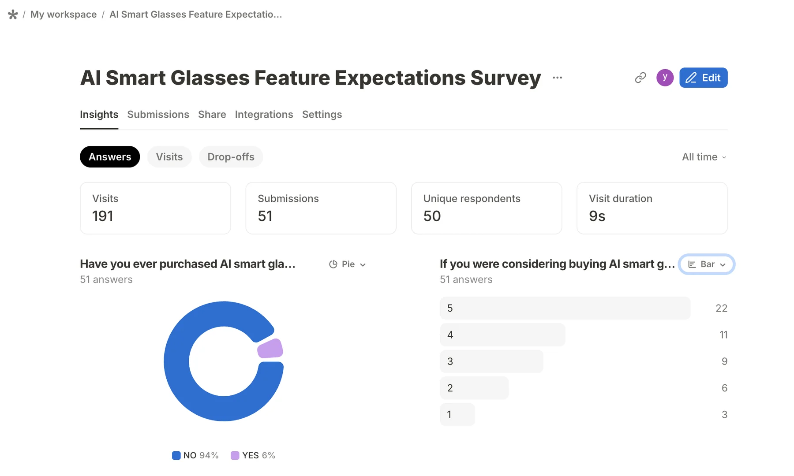
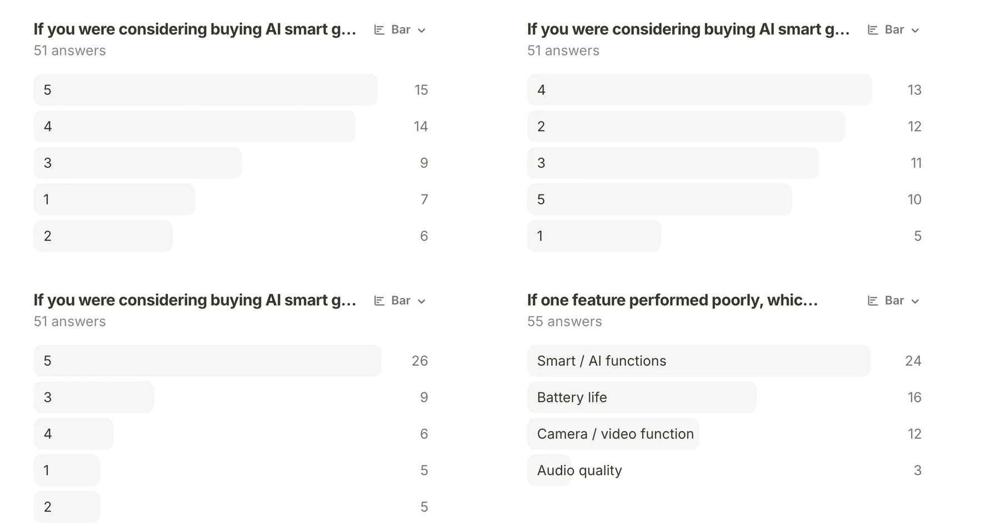

Segment
Split each review into individual sentences so mixed opinions are not assigned to every feature.
CONSUMER ANALYTICS · AI SMART GLASSES
An exploratory study of how feature-specific sentiment toward battery, camera, audio, and Smart/AI functions is associated with customer ratings—and how post-purchase experience differs from pre-purchase expectations.
01 · THE QUESTION
The project asks which product features are most strongly associated with customer ratings of Ray-Ban Meta smart glasses, pooling Gen 1 and Gen 2 reviews for the main analysis.
A second question compares review-based evidence with a survey of perceived feature importance before ownership: do the features people expect to matter most match the features associated with their post-purchase ratings?
02 · RESEARCH PIPELINE
Split each review into individual sentences so mixed opinions are not assigned to every feature.
Match sentences to curated keyword dictionaries for battery, camera, audio, and Smart/AI functions.
Use VADER to translate sentence-level language into a compound sentiment score from −1 to +1.
Estimate exploratory OLS models with star rating as the outcome and feature sentiment as predictors.
Loading the complete Python pipeline…03 · REGRESSION FINDINGS
Model 2 controls for product-group differences. Bars show coefficients; significance labels are based on the saved notebook output.
Across all 645 reviews, Model 2 explained 15.6% of rating variation (adjusted R²=.150). The Gen 2 dummy was positive and significant (β=.424, p<.001), while the maximum VIF was 1.184. These are associations, not causal effects.
04 · EXPECTATION SURVEY
The survey collected 51 submissions from 50 unique respondents. Most had not previously purchased AI smart glasses, making the results useful as an exploratory view of pre-purchase priorities.


Smart/AI functions were the most frequently selected pre-purchase deal-breaker, while Camera sentiment had the largest coefficient in the review model—an early expectation-versus-experience gap to test formally.
05 · LIMITATIONS & NEXT STEP
The interaction model found that feature associations differed jointly across generations (F-test p=.047). Camera sentiment had a stronger association for Gen 1 than Gen 2; its interaction term was negative and significant (β=−.446, p=.025). The other feature interactions were not statistically significant.
Formal statistical analysis of the survey is still pending. Until then, survey patterns are presented as descriptive signals rather than confirmed differences.